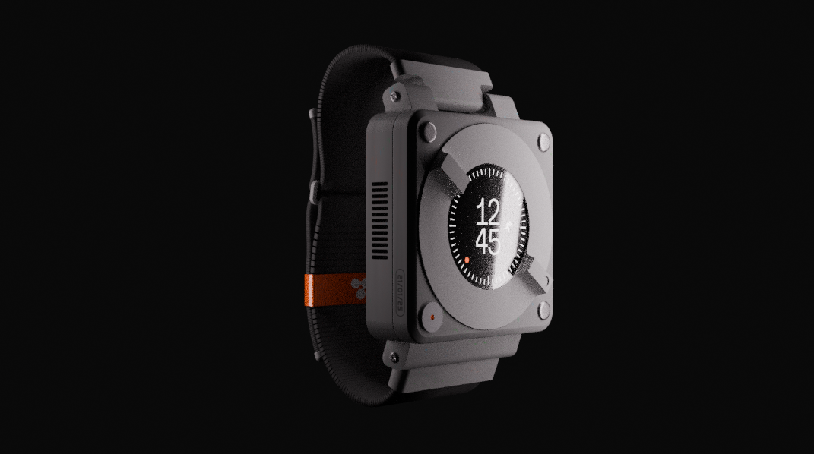
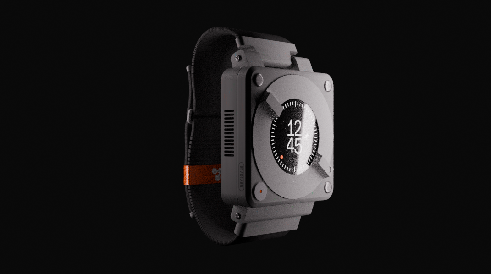

"The best way to predict the future is to invent it." — Alan Kay
"Axion" is a design project for a sports watch created for modern athletes, combining lightness, durability, and environmental responsibility. This model explores the fusion of sports performance and sustainability, with a functional design and a commitment to eco-responsibility. Built to withstand extreme conditions of outdoor sports, "Axion" uses durable, lightweight materials to maximize performance without sacrificing resistance. Its clean and futuristic design highlights its technical side, while integrating ecological elements that make it an environmentally friendly choice. This project reflects a creative approach aiming to push the boundaries of sports design while incorporating ethical manufacturing practices, for a watch that is both robust, lightweight, and environmentally responsible.
 

May this creation awaken your inspiration. (• ◡•)